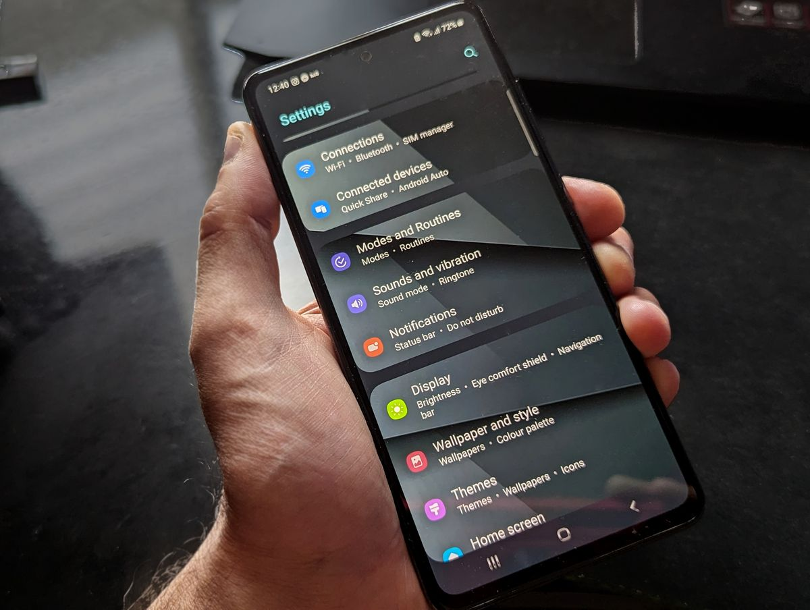
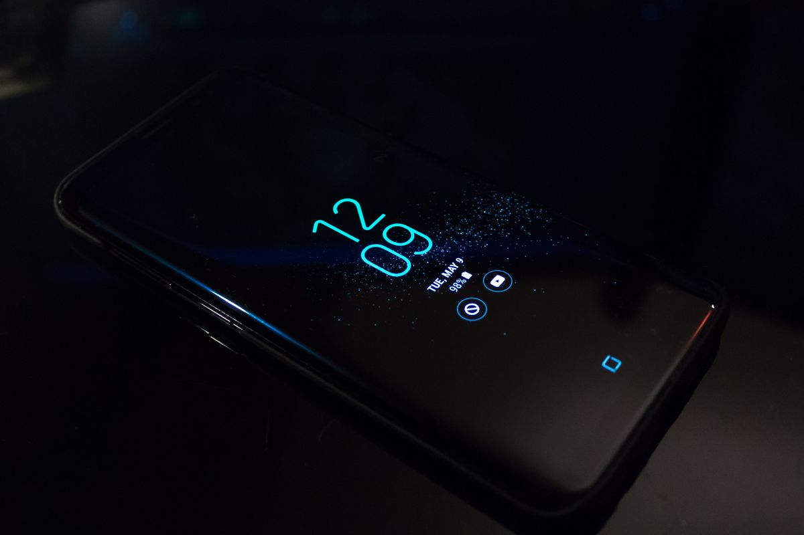

Kuota di HP Android bisa dihemat tanpa mengurangi pemakaian HP secara drastis. Kuncinya ada di tiga pengaturan: nyalakan Penghemat Data bawaan Android, kunci pembaruan aplikasi dan cadangan foto ke Wi-Fi saja, lalu matikan unduhan otomatis media di WhatsApp saat memakai data seluler.
Jawaban singkatnya begini. Kuota cepat habis biasanya bukan karena kamu terlalu sering membuka HP, melainkan karena aplikasi bekerja diam-diam di latar belakang: memperbarui aplikasi, mencadangkan foto ke cloud, mengunduh video dan foto dari grup chat, dan memutar video otomatis di media sosial. Semua itu bisa dibatasi dari pengaturan bawaan HP, tanpa aplikasi tambahan. Nyalakan Penghemat Data di Pengaturan, lalu Jaringan dan internet, supaya sebagian besar aplikasi hanya memakai data latar belakang lewat Wi-Fi. Buka Play Store, atur pembaruan aplikasi otomatis ke Wi-Fi saja, dan di Google Photos atur pencadangan hanya lewat Wi-Fi. Di WhatsApp, buka Pengaturan, Penyimpanan dan data, lalu kosongkan semua jenis media pada bagian Saat menggunakan data seluler. Terakhir, di YouTube pilih Hemat data untuk kualitas video saat memakai data seluler, dan pasang peringatan pemakaian data di pengaturan kartu SIM supaya kamu tahu sebelum kuota benar-benar habis.
Apa yang paling boros kuota di HP kamu?
Sebelum mengubah apa pun, lihat dulu ke mana kuota kamu pergi. Buka Pengaturan, lalu Jaringan dan internet, lalu Penggunaan data, dan pilih aplikasi yang paling banyak memakai data seluler. Di banyak HP, daftar ini bisa diurutkan per periode, jadi kamu bisa melihat pemakaian satu bulan penuh. Biasanya tiga biang keroknya sama: aplikasi video seperti YouTube dan TikTok, aplikasi media sosial yang memutar video otomatis, dan layanan cadangan foto seperti Google Photos. Kalau satu aplikasi yang jarang kamu buka ternyata memakan data paling besar, di situlah kebocorannya. Catat tiga aplikasi teratas, karena langkah berikutnya akan menyasar mereka. Nama menu bisa sedikit berbeda tergantung merek HP, tapi kata kuncinya selalu sama: Penggunaan data atau Data seluler.

Bagaimana cara menghemat kuota internet di HP Android?
Sesudah tahu siapa pelakunya, kerjakan tujuh langkah berikut. Langkah-langkah di bawah ini diperiksa per November 2026 dan memakai pengaturan bawaan HP, jadi kamu tidak perlu memasang aplikasi penghemat kuota tambahan. Mulai dari yang pertama, karena itu yang paling terasa.
- Nyalakan Penghemat Data. Ini fitur bawaan Android yang membatasi sebagian besar aplikasi supaya hanya memakai data latar belakang lewat Wi-Fi. Aplikasi yang sedang kamu buka tetap bisa memakai data seluler seperti biasa. Caranya: buka Pengaturan, lalu Jaringan dan internet, lalu Penghemat Data, dan nyalakan. Di beberapa HP, tombol ini juga ada di panel Setelan Cepat. Kalau ada aplikasi penting yang notifikasinya harus tetap masuk, misalnya aplikasi pesan, kamu bisa memberinya pengecualian lewat menu Data tanpa batas di dalam pengaturan yang sama.
- Kunci pembaruan aplikasi ke Wi-Fi saja. Pembaruan aplikasi, terutama game, bisa terunduh kapan saja, termasuk saat kamu memakai data seluler. Buka Play Store, ketuk foto profil, lalu Pengaturan, lalu Preferensi jaringan, lalu Pembaruan aplikasi otomatis, dan pilih Hanya melalui Wi-Fi. Aplikasi tetap diperbarui, hanya saja menunggu sampai HP tersambung Wi-Fi.
- Atur cadangan foto hanya lewat Wi-Fi. Google Photos secara bawaan mencadangkan foto dan video ke cloud, dan satu video pendek saja sudah memakan data yang tidak sedikit. Buka Google Photos, lalu Pengaturan, lalu Pencadangan, dan pastikan pencadangan hanya berjalan lewat Wi-Fi. Foto tetap aman di cloud, hanya saja prosesnya menunggu Wi-Fi.
- Matikan unduhan otomatis WhatsApp saat memakai data seluler. Di grup yang ramai, foto dan video yang masuk bisa terunduh sendiri tanpa kamu minta. Buka WhatsApp, lalu Pengaturan, lalu Penyimpanan dan data. Pada bagian Unduh otomatis media, ketuk Saat menggunakan data seluler, lalu kosongkan semua jenis media: foto, audio, video, dan dokumen. Sesudah ini, media hanya terunduh kalau kamu mengetuknya sendiri, dan kamu bisa melihat dulu ukuran berkasnya sebelum mengunduh.
- Turunkan kualitas video YouTube saat memakai data seluler. Video adalah penyedot kuota terbesar, dan YouTube secara bawaan menyesuaikan kualitas dengan kecepatan jaringan, jadi kualitasnya bisa naik sendiri saat sinyal bagus. Buka aplikasi YouTube, ketuk foto profil, lalu Pengaturan, lalu Preferensi kualitas video, dan untuk jaringan seluler pilih Hemat data. Pengaturan untuk Wi-Fi bisa kamu pisahkan sendiri, jadi di rumah video tetap jernih. Matikan juga putar otomatis di beranda supaya video tidak terputar sendiri saat kamu menggulir.
- Batasi data latar belakang aplikasi yang paling boros. Dari daftar tiga aplikasi teratas tadi, buka Pengaturan, lalu Aplikasi, pilih aplikasinya, lalu Data seluler, dan matikan Izinkan data latar belakang. Aplikasi itu tetap bekerja normal saat kamu membukanya, hanya saja tidak lagi menarik data sendiri saat tidak dipakai. Jangan batasi aplikasi pesan yang notifikasinya harus cepat sampai.
- Pasang peringatan pemakaian data. Di banyak HP Android, kamu bisa memasang peringatan di pengaturan kartu SIM, di bawah menu Peringatan dan batas data. Pasang peringatannya sedikit di bawah batas paketmu, misalnya saat pemakaian mendekati akhir paket, supaya kamu sempat mengurangi pemakaian sebelum kuota benar-benar habis. Perhitungan di HP dan di operator bisa sedikit berbeda, jadi jadikan ini pengingat, bukan patokan mutlak.
Apakah Penghemat Data membuat HP jadi lemot?
Tidak. Penghemat Data hanya membatasi pemakaian data aplikasi di latar belakang, bukan kecepatan prosesor atau jaringanmu. Aplikasi yang sedang kamu buka tetap berjalan seperti biasa. Yang mungkin terasa berbeda adalah notifikasi dari aplikasi tertentu yang datang sedikit lebih lambat, karena aplikasinya menunggu sampai kamu membukanya atau sampai HP tersambung Wi-Fi. Kalau ada aplikasi yang notifikasinya penting, beri pengecualian lewat menu Data tanpa batas, seperti yang dijelaskan di langkah pertama. Intinya, Penghemat Data menunda, bukan memblokir, dan kamu bisa mencabut pengecualiannya kapan saja.
Kuota yang cepat habis hampir selalu punya pelakunya, dan pelakunya biasanya bukan kamu, melainkan pengaturan bawaan yang membiarkan aplikasi bekerja sendiri. Coba tujuh langkah di atas satu per satu, lalu periksa lagi daftar penggunaan data sesudah satu minggu. Kalau satu aplikasi masih juga boros, mungkin memang sudah waktunya kamu mempertimbangkan aplikasi penggantinya yang lebih ringan.

Baca juga: Cara Mempercepat HP Android yang Lemot Tanpa Aplikasi Pembersih Tambahan, lalu jelajahi artikel Other lainnya di halaman Other, dan intip juga artikel riset di blog kami.
Sumber dan Info Resmi
Langkah dan pengaturan di artikel ini merujuk ke sumber berikut:
- Google Pixel Phone Help: Penghemat Data membuat sebagian besar aplikasi hanya memakai data latar belakang lewat Wi-Fi; aplikasi yang sedang dibuka tetap bisa memakai data seluler; pengecualian lewat menu Data tanpa batas.
- Samsung Support: jalur Play Store untuk mengatur pembaruan aplikasi otomatis ke Hanya melalui Wi-Fi.
- Lilach Bullock: unduhan otomatis media WhatsApp diatur terpisah untuk data seluler, Wi-Fi, dan roaming, dengan tiap jenis media dicentang terpisah di Android.
- Google YouTube Kids Help dan UMA Technology: YouTube menyediakan pilihan kualitas Hemat data, diatur lewat foto profil, Pengaturan, Preferensi kualitas video, dengan pilihan terpisah untuk data seluler dan Wi-Fi.
- Pricio: pencadangan Google Photos diatur lewat Pengaturan, Pencadangan, dengan pilihan Hanya Wi-Fi untuk penggunaan data.
- Pleasehere: jalur pemeriksaan pemakaian data per aplikasi lewat Pengaturan, Jaringan dan Internet, Penggunaan Data.
- Berita ITERA: Penghemat Data tidak menghentikan data aplikasi yang sedang dibuka; aplikasi penting sebaiknya diberi pengecualian, bukan semua aplikasi.